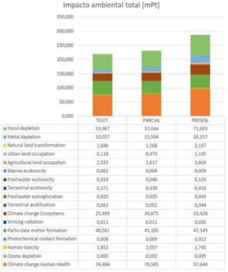

19 El Futuro del trabajo, inteligente y económico
Palabras clave: teletrabajo, sostenibilidad, productividad laboral, flexibilidad laboral, impacto ambiental, transformación digital.
19.1 Introducción
A lo largo del tiempo se ha producido una evolución en el ámbito digital, el cual no solo afecta el aspectos económicos, sociales, culturales o educativos de la sociedad, también, y en gran medida, resultando en cambios importantes en el campo laboral, desde implementación de herramientas digitales de manera presencial hasta el trabajo remoto o teletrabajo.
El teletrabajo tiene orígenes desde los años setenta debido a una crisis energética y creciendo enormemente durante la pandemia del COVID-19, logrando transformar el campo laboral al ofrecer flexibilidad, reducir costos y ampliar oportunidades globales. A pesar de sus beneficios, el uso de dispositivos electrónicos y la gestión de residuos tecnológicos pueden presentar problemas de sostenibilidad a largo plazo que deben ser tomados en cuenta.
19.2 Artículo
Las crisis económicas y sanitarias han sacado las alternativas laborales más flexibles y resilientes. En el año 2009 comenzó una crisis financiera que afectó a nivel mundial, aumentando la tasa de desempleos, ya que el teletrabajo no era una idea en auge y por falta de información, muchas empresas optaron a despidos para reducir costos. Este tema evolucionó con el tiempo, y 2020 es donde tuvo protagonismo. ¿Qué inició esta tendencia? En 2020 nos golpeó una pandemia mundial que nos encerró en nuestros hogares, pero las empresas debían seguir operando para evitar la quiebra.
En América Latina y el Caribe solamente en 2019 el 3% de los trabajadores practicaban la modalidad de teletrabajo, este aumentó a un 10% y 35% durante la pandemia. [4] Esto obligó a las empresas a confiar en sus colaboradores y a desarrollar estrategias de control basadas en resultados. Algunas invirtieron en mejorar servidores y la velocidad de internet, mientras que otras revisaron sus procesos de atención y resolución de problemas para los usuarios de sus servicios.
En esa perspectiva, el teletrabajo se planteó como una solución para garantizar la operación de la empresa, sin exponer a los empleados a riesgos sanitarios o económicos. Sin embargo, se presentaron retos y desafíos, esto ocasionó que los entornos laborales cada vez fueran más flexibles y con una menor estructuración, lo que exigió nuevas habilidades de comunicación y aprendizaje. El desconocimiento de plataformas digitales limito la productividad, haciendo esencial el uso de tecnología para su labor.
Beneficios del trabajo remoto para el empleado y empleador
El teletrabajo permite al trabajador recibir su remuneración mientras permanece en casa con su familia y sin que se suspenda el contrato de trabajo. Esto es beneficioso para el empresario porque garantiza que se contará con los servicios del trabajador, facilitando además la conciliación de la vida laboral y familiar. Además, se reducen los costes operativos de las empresas dado que hay menor necesidad de grandes espacios de oficina y porque se reducen las facturas de los suministros, permitiendo a los trabajadores remotos pagar menos porque los gastos de desplazamiento y ahorro en suministros disminuyen.
Los empleados remotos suelen mostrar niveles de productividad más altos al definir áreas cómodas y personalizados en sus hogares, reduciendo distracciones y errores en comparación con una oficina convencional. Al implementar el trabajo remoto se observa una reserva global de talentos, lo que facilita contratar a los mejores candidatos sin tener en cuenta la ubicación geográfica, lo que permite diferentes zonas horarias y fortalece la presencia global de la empresa. Si tomamos en cuenta la flexibilidad de horarios y las vacaciones, hacemos hincapié en las visiones del trabajo ancladas a la libertad del trabajador y compromiso con la organización.
Tomando en cuenta los aspectos anteriores se puede determinar que el teletrabajo impacta de manera indirecta a la salud. Un estudio realizado por la empresa de suplementos de Staples, indica que el 75 % de los jefes/as que implementaron este sistema notaron a sus empleados más felices, reportaron un 37% menos de absentismo y una mejora en el ánimo del 48%. [3]
Teletrabajo como una solución verde e inteligente
El teletrabajo también tiene un impacto ambiental, el más obvio es en la necesidad de movilización, ya que se reduce la emisión de CO2. Un análisis realizado por la Facultad de Ingeniería de la Universidad de Antioquia de Colombia, la implementación de trabajo remoto puede llegar a disminuir entre el 30% y 50% de estas.[2]
Esta modalidad también tiene otros aspectos positivos en su implementación, un estudio realizado en la Universidad Politécnica de Valencia refleja que este modelo afecta positivamente en la salud humana, la eutrofización del agua dulce e incluso en la creación de oxidantes fotoquímicos. [1] Empresas como Microsoft, American Express, Dell, Salesforce y Cisco son ejemplo de una implementación adecuada que impacta de gran manera en la sostenibilidad del plantea.

Figura 19.1: Universidad Politecnica de Valenica: Análisis comparativo de impacto ambiental del teletrabajo en relación con el nivel de presencialidad en la actividad actual
19.3 Conclusiones
El impacto de un modelo como el teletrabajo es alto, no solo por los beneficios que ofrece en la calidad de vida de los empleados o por la flexibilidad que genera dicho modelo, también porque se producen nuevas competencias que benefician tanto a estas personas como a la empresa donde trabajan, además, existe un obvio impacto ambiental positivo, tanto en la reducción de emisiones de CO2, como en el consumo energético tan alto que producen las oficinas de empresas tradicionales, y si bien su implementación no puede ser aplicada en todos los trabajos, es posible generar un impacto similar reduciendo el uso de vehículos particulares mediante la optimización o generación de alternativas en el transporte público, siendo una responsabilidad que debe exigirse constantemente a los gobiernos de cada país.
19.4 Referencias
[1] Miedes Serna, María. Análisis comparativo de impacto ambiental del teletrabajo en relación con el nivel de presencialidad en la actividad laboral. Universidad Politécnica de Valencia, curso académico 2020/2021.
[2] Restrepo Romero, Gabriel Ricardo. Análisis de las emisiones de CO₂ generadas por la empresa TCC bajo escenarios de teletrabajo. Universidad de Antioquia, Facultad de Ingeniería, Escuela Ambiental, 2021.
[3] Gamarra, Greta. “Teletrabajo para empresas: ventajas y desventajas.” Factorial, 15 de septiembre de 2020. factorialhr.es
[4] Silva-Porto, María Teresa. “Teletrabajo: qué es y cómo está cambiando el mundo laboral.” Factor Trabajo (blog), 2 de junio de 2022. iadb.org
[5] Terzakyan, Talin. “10 beneficios del Teletrabajo.” Deel.com. Accedido el 9 de febrero de 2025. deel.com